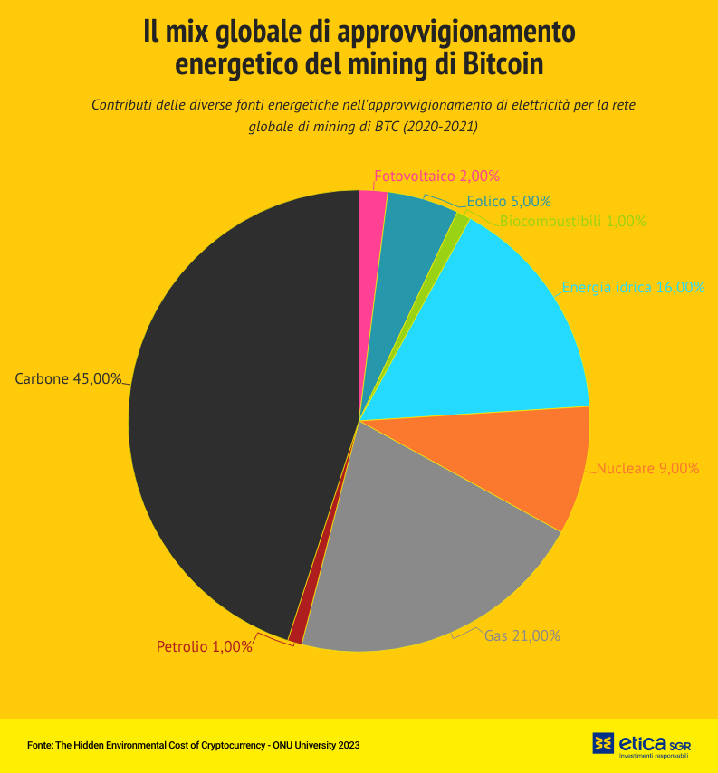
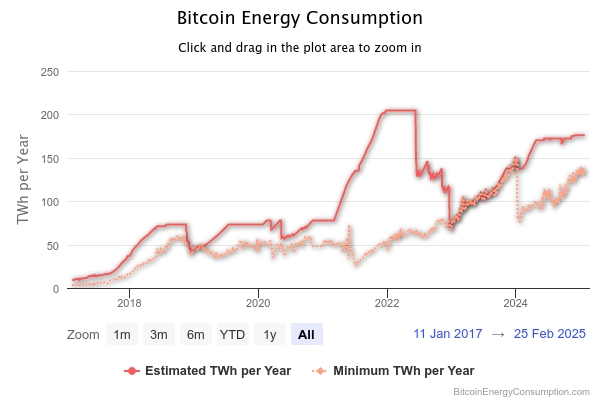

PROGETTAZIONE E REALIZZAZIONE DI UN WEBSITE SU CRIPTOVALUTE
← Rischi e Impatto Ambientale →
C'è un costo energetico legato a certi utilizzi delle DLT; conseguenze che derivano, a livello ambientale, dalla diffusione delle criptovalute rappresentano un tema attuale e complesso che al momento non ha ancora una soluzione condivisa. Il Bitcoin, la criptovaluta più diffusa e più impattante a livello globale in termini finanziari sconta infatti una attitudine estremamente energivora, che è legata al metodo adottato per la validazione delle transazioni. Si pensi che, secondo alcuni studi, la blockchain di Bitcoin arriva a consumare un quantitativo annuale di elettricità pari a quello dell’intera Austria, necessario per gestire la validazione delle circa 300 mila transazioni che si svolgono quotidianamente sulla sua rete.

“I dati provengono dal Bitcoin Energy Consumption Index, che calcola in 98 milioni di tonnellate la CO2 immessa ogni anno nell’atmosfera dalle “fabbriche” di bitcoin, un valore equiparabile alle emissioni annuali di anidride carbonica di interi Paesi, come ad esempio la Grecia. Per compensare le emissioni di CO2 derivanti dalle attività estrattive della moneta virtuale, si dovrebbero piantare ogni due anni 4 miliardi di alberi, occupando un’area pari a quella della Danimarca.
Un esempio virtuoso è quello dell’Islanda che, in relazione alla sua estensione e popolazione, ha una presenza significativa di società e imprese dedite alla generazione di bitcoin, ma che ha deciso di limitare l’espansione dei data center per l’estrazione di criptovalute, considerata non in linea con la missione di neutralità carbonica.”
Fonte:Eticasgr. Link:eticasgr.com

Il mining, cioè il processo mediante il quale vengono validate e aggiunte nuove transazioni a una blockchain, richiede che le apparecchiature funzionino ininterrottamente, sfruttando la massima potenza 24 ore su 24. Questo porta spesso a privilegiare l'uso di energia fossile, poiché le fonti rinnovabili, pur rappresentando un'alternativa sostenibile, sono limitate dalla disponibilità geografica e dalle fluttuazioni stagionali. Le elevate potenze di calcolo, note come hashrate, necessarie per risolvere i complessi problemi matematici richiesti dalla rete Bitcoin per validare ogni transazione, determinano un significativo consumo energetico. Questo elevato assorbimento di energia rende Bitcoin e altre criptovalute basate sulla stessa tecnologia, almeno al momento non eco-friendly.
Si stanno comunque affacciando sul mercato dei nuovi modelli di validazione, meno estremi dal punto di vista tecnico e, quindi, in grado di raggiungere migliori livelli di efficienza in termini di consumi energetici.
Negli ultimi anni, le criptovalute hanno quindi trasformato il panorama finanziario, dimostrandosi utili come riserva di valore, strumento di scambio e opportunità di investimento a lungo termine.
Fonte background:Freepik. link:freepik.com